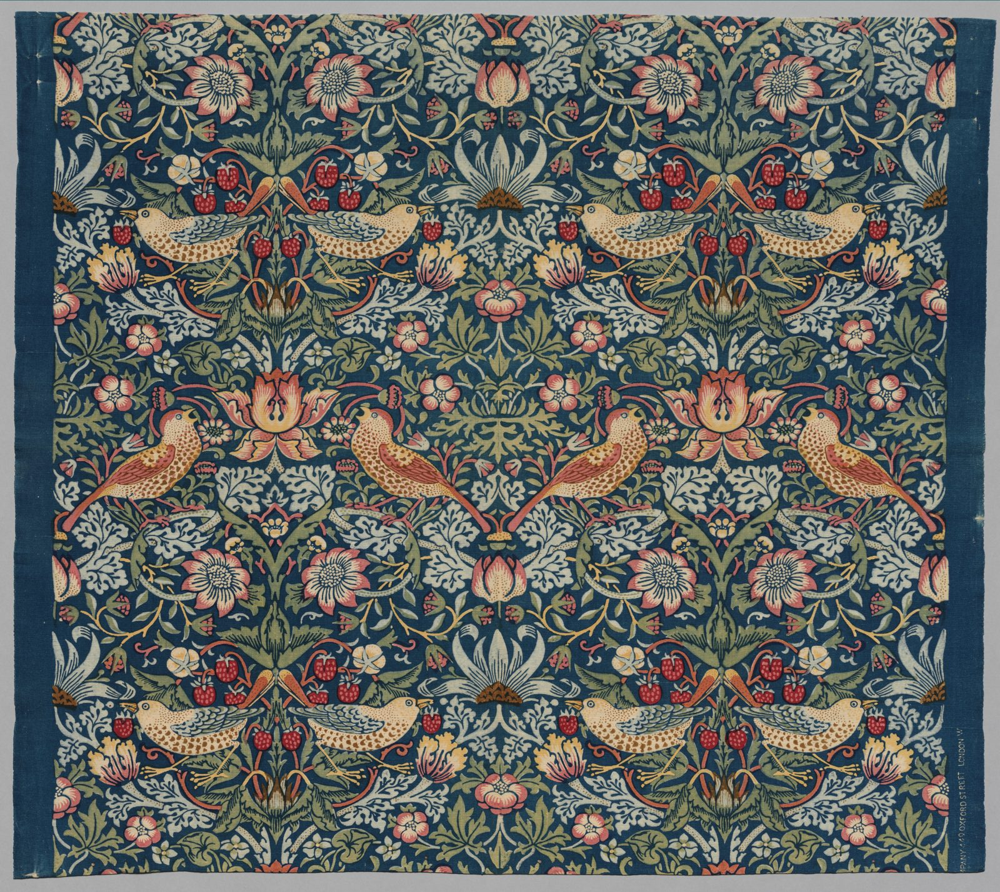

References / Textile / 343
Strawberry Thief furnishing textile
William Morris’s best-known printed cotton: thrushes and strawberries mirrored across an indigo ground, with almost no plain ground left.
- Source
- Cleveland Museum of Art: Strawberry Thief, 1937.696
- Creator
- William Morris
- Made
- Designed 1883; this length printed at Merton Abbey, about 1936
- Style
- Arts and Crafts (agent-proposed, not yet reviewed by a person)
- Moods
- Dense, handmade, rich
- Evidence
- Downloaded and inspected the Cleveland Museum of Art open-access image of object 1937.696 (3400 × 3035 px). The museum dates this length “c 1936” and gives its place as Merton Abbey, so it is a late printing of the 1883 design.
- Reviewed
- Rights
- Open license, stored. License: CC0-1.0. Rights policy
Context
The Cleveland Museum of Art calls it perhaps the most recognizable of Morris’s textiles. It shows the thrushes that ate the fruit in the garden at Kelmscott Manor. Cleveland Museum of Art.
Morris perfected the indigo-discharge process with this design: the whole cloth was dyed blue, then bleached and block-printed, here with more colours than any of his other textiles. Cleveland Museum of Art.
Cleveland describes this length as plain-weave cotton, discharge printed, 88.3 × 99.1 cm, printed at Merton Abbey about 1936. Cleveland Museum of Art.
Observed
- The ground is a deep indigo blue. Plain blue shows only in narrow gaps between motifs.
- Pairs of thrushes face each other across a vertical axis; the pattern is a mirrored, turnover repeat.
- Motifs are red strawberries, pink and salmon flowers, sage and olive leaves, and pale blue-white acanthus leaves, with yellow stems.
- Each motif has a dark outline and flat fills. Speckles on the birds’ breasts give texture, not shading.
- A plain indigo band runs down both edges. Printed white capitals on the right edge read “…PANY 449 OXFORD STREET LONDON W.”
Why it belongs
This is the clearest case of the rubric’s dense all-over repeat: the mirror axis makes the pattern static and symmetrical, and the colours are those of indigo, madder, and weld.
The red here is a light, warm red on dark blue. It is used for fruit and flowers, not for text.
Borrow
Mirror a motif pair around a vertical axis and fill the gaps with leaves until only thin lines of ground show.
Use a dark indigo field with small, bright accents of madder red and weld yellow.
Measured
Machine-extracted by tools/image-traits.py on . Full measurement.
- Mean chroma
- 0.12
- Palette
- #1d374b 23%
- #adadab 7%
- #838163 4%
- #74755e 4%
- #a7a898 3%
- #7b827a 3%
- #334853 3%
- #9a9a8b 3%

